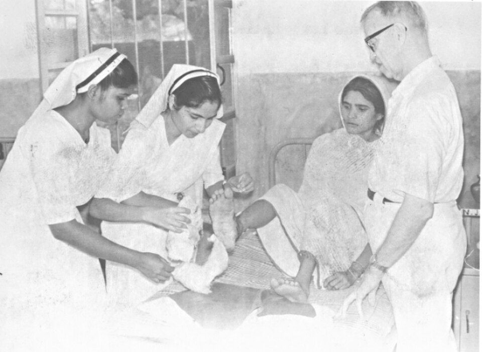
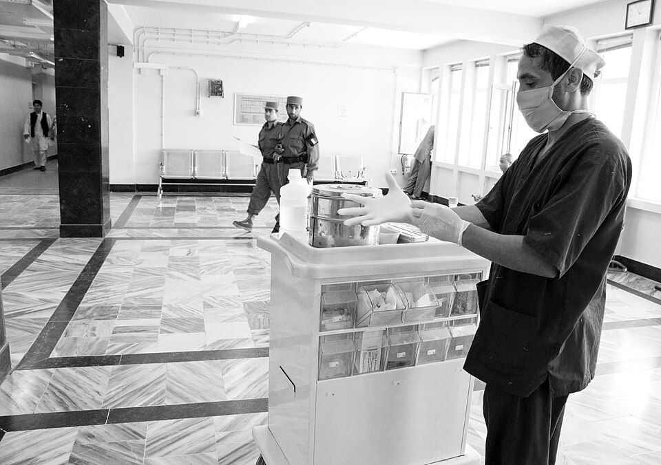

Para la enfermera en planta, primaria o urgencias
- Técnicas revisadas con las guías vigentes
- Calculadora de goteo y escalas de valoración
- Proceso enfermero con NANDA-I, NIC y NOC
Técnicas paso a paso, escalas y calculadoras, preparación del EIR y guías de cuidados en casa para pacientes y familias. Todo basado en guías clínicas vigentes y en datos oficiales.

El mismo rigor para todos, con el nivel de detalle que necesita cada persona.
Material, pasos, cuidados posteriores y errores frecuentes, con la guía en la que se basa cada ficha.
Los cinco momentos de la OMS y la técnica con solución alcohólica.
Elección del calibre y de la vena, inserción, fijación y vigilancia.
Técnica estéril, cuidados de la sonda y cuándo retirarla.
Medición, colocación y cómo comprobar la posición antes de usarla.
Zonas, ángulos, volúmenes y rotación de los puntos de punción.
Categorías, prevención y principios de la cura en ambiente húmedo.
Cómo medirla bien y qué hacer si está baja.
La secuencia de reanimación en el adulto y el uso del DEA, según las guías de 2025.
Cómo medirla bien y cómo interpretarla con la clasificación europea de 2024.
Dispositivos, flujos y saturación objetivo según el riesgo del paciente.
Colocación de los electrodos y errores que alteran el trazado.
Técnica, orden de llenado de los tubos y hemocultivos.
Los correctos, el doble chequeo y los medicamentos de alto riesgo.
Tipos de estoma, cambio del dispositivo y complicaciones.
Cómo sospecharla, el cribado con NEWS2 y lo que se hace en la primera hora, según la guía de 2026.
Valoración, limpieza, índice tobillo-brazo y terapia compresiva.
Exploración con monofilamento, riesgo, educación y qué hacer ante una úlcera.
Cartucho presurizado con cámara, polvo seco y niebla fina: cómo se usa cada uno.
Electrocardiograma en 10 minutos, primeras medidas y tiempos de reperfusión.
Reconocer el ictus, la hora de inicio y los cuidados mientras llega el tratamiento.
Identificación, comprobaciones, vigilancia y qué hacer ante una reacción.
Curas, desinfección de conexiones, lavados y prevención de bacteriemias.
Cuidados del estoma, cánula interna, aspiración segura y urgencias.
Administración, medicación por sonda, cuidados del estoma y complicaciones.
Acenocumarol e INR, anticoagulantes directos, olvidos, sangrados y educación.
El algoritmo de 2025: ritmos desfibrilables, adrenalina, amiodarona y causas reversibles.
Cinco ventilaciones de rescate, 15:2 y las dosis por peso, según las guías de 2025.
Precauciones estándar y por contacto, gotas y transmisión aérea.
Qué EPI usar en cada caso y el orden seguro para ponerlo y quitarlo.
Identificación, comunicación, cirugía segura y cómo notificar un incidente.
Reconocerla y poner adrenalina intramuscular sin demora: dosis, posición y vigilancia.
Las dos urgencias de la diabetes: cómo se reconocen y qué hace la enfermera.
Punción radial, cuidados de la muestra e interpretación básica.
Apósito, signos de infección y cuándo se retiran puntos y grapas.
Técnica del enema, precauciones con los de fosfato y desimpactación manual.
Tipos de vendaje, cómo aplicarlos y la vigilancia de la circulación.
Último recurso: indicación, técnica, vigilancia, registro y alternativas.
Ayuno, higiene, medicación, comprobaciones y cuidados al volver de quirófano.
Funcionan en tu navegador y no guardan ningún dato. Cada una explica cómo se interpreta.
gotas/min = volumen × factor ÷ minutos
| Frecuencia cardiaca en reposo | 60–100 lpm |
| Frecuencia respiratoria | 12–20 rpm |
| Tensión arterial no elevada (ESC 2024) | <120/70 mmHg |
| Hipertensión (en consulta) | ≥140/90 mmHg |
| Saturación de oxígeno | 95–100 % |
| Glucemia: hipoglucemia | <70 mg/dl |
Valores orientativos. Fuentes: Sociedad Europea de Cardiología (2024) y American Diabetes Association (2026).
Gotas por minuto y mililitros por hora a partir del volumen y el tiempo.
Apertura ocular, respuesta verbal y respuesta motora, de 3 a 15 puntos.
Seis apartados, de 6 a 23 puntos: cuanto más baja, más riesgo.
Cinco apartados, de 5 a 20 puntos.
Diez actividades básicas de la vida diaria, de 0 a 100 puntos.
Escala numérica, visual analógica y de caras para medir la intensidad del dolor.
Siete constantes que avisan a tiempo de que un paciente empeora, de 0 a 20 puntos.
Caídas previas, medicación, déficits sensoriales, estado mental y marcha. Desde 3 puntos, riesgo alto.
Volumen a administrar, concentración de una dilución y dosis por peso.
De µg/kg/min a ml/h y al revés, para bombas de perfusión.
Índice de masa corporal, superficie corporal de Mosteller y balance de líquidos.
Seis apartados, de 0 a 125 puntos. Muy usada en hospitales.
Cribado de desnutrición en mayores en seis preguntas, de 0 a 14 puntos.
Diez preguntas para detectar deterioro cognitivo. Se cuentan los errores.
Veintidós preguntas sobre cómo afecta cuidar, de 0 a 88 puntos.
Cinco signos al minuto y a los cinco minutos de vida, de 0 a 10 puntos.
Ocho actividades instrumentales, como usar el teléfono, comprar o tomar la medicación.
Equilibrio y marcha observados, de 0 a 28 puntos, para valorar el riesgo de caídas.
Detectar un ictus y estimar si hay oclusión de una arteria grande.
Cuánto ahogo tiene y cuánto afecta la EPOC a la vida diaria.
Detectar el síndrome confusional agudo en pocos minutos a pie de cama.
Situación familiar, económica, vivienda, relaciones y apoyos, de 5 a 25 puntos.
Los medicamentos que más maneja la enfermera y las enfermedades crónicas que más se ven en el centro de salud.
Los que más daño causan cuando hay un error, y cómo evitarlo.
Perfiles de acción, conservación, técnica y pautas en el hospital.
Clasificación de 2024, medición en casa y objetivos de control.
Los cuatro pilares del tratamiento y el peso diario.
El calendario de vacunación vigente y los cuidados propios de cada etapa, del nacimiento al final de la vida.

Guías en lenguaje claro para cuidar a una persona dependiente: cambios posturales, caídas, disfagia, sonda, insulina, y qué ayudas ofrece la Ley de Dependencia a quien cuida.
Ver las guíasLas cinco etapas con las que se planifican los cuidados.
Datos de la persona, con las 14 necesidades de Henderson o los patrones de Gordon.
La respuesta de la persona al problema de salud, con NANDA-I.
Resultados medibles (NOC) e intervenciones (NIC).
Los cuidados y su registro.
Comprobar los objetivos y ajustar el plan.
De Isabel Zendal y Florence Nightingale a la universidad, y cómo se ejerce hoy la enfermería en distintos países.

Cinco épocas, seis figuras, los hitos de la enfermería en España y las técnicas que han cambiado.

Formación y requisitos para ejercer en seis países, con datos de la OMS.

El grado, la colegiación, la prescripción enfermera y la futura bolsa de empleo.


.jpg){kind=link}